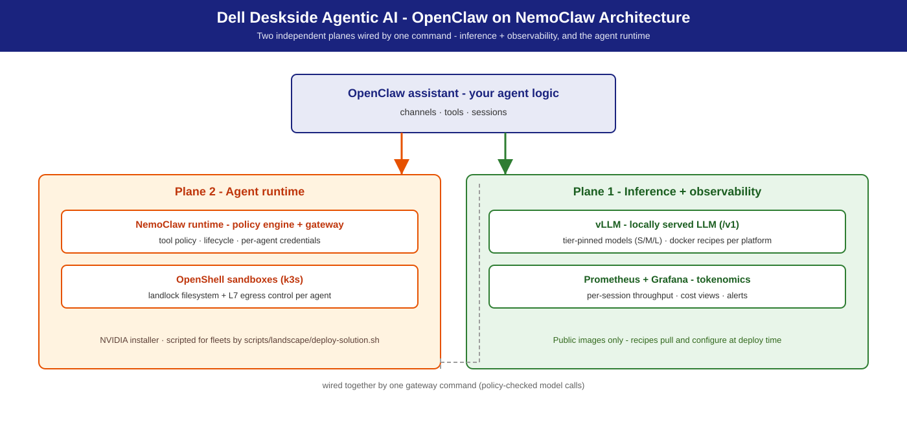

OpenClaw on NemoClaw
The OpenClaw assistant on NVIDIA's NemoClaw runtime — agent lifecycle, policy engine, and OpenShell sandbox — backed by a locally-served LLM on Dell deskside hardware.
Summary
NemoClaw is NVIDIA's runtime for autonomous, tool-using AI agents: agent lifecycle, declarative policy engine, OpenShell sandbox. This solution binds it to a locally-served LLM (vLLM, tuned public-image recipes in this repo) so the full agent loop — reasoning, tool execution, policy enforcement — stays on your Dell workstation, no cloud dependency. NemoClaw onboards a supported agent — by default OpenClaw, the open-source assistant — so what this solution actually runs is OpenClaw on NemoClaw; swap in your own agent or Hermes on the same base. Dell adds S/M/L sizing, serving recipes, validation numbers, and fleet guidance on top of NVIDIA's NemoClaw playbooks and the RTX Local AI hub.
This is the base runtime. For the shipping tool-using agent, use Hermes on NemoClaw — Hermes runs on this substrate. Teams building their own agents start here.
Personas
| Persona | What this solution gives them |
|---|---|
| IT Admin | Two-plane rollout (serving + runtime), fleet install, policy tiers — IT-Admin Guide. |
| Functional SME | "Which system for my team size?" — the S/M/L table + measured per-tier concurrency. |
| AI Engineer | Runtime + sandbox + policy for custom agents, wired to a local OpenAI-compatible LLM — Developer Deploy Guide. |
Reference NVIDIA playbooks
| Playbook | Platform | What Dell adds |
|---|---|---|
| Run NemoClaw with a Local LLM (Spark) | DGX Spark (GB10) | Dell sizing, tuned vLLM recipes (public images), fleet mgmt |
| Run NemoClaw with a Local LLM (Station) | DGX Station (GB300) | L-tier sizing, multi-agent app-host config |
| Secure AI Agents with OpenShell | DGX Spark (GB10) | Enterprise policy-tier guidance (strict → standard) |
| Build and Deploy a Multi-Agent Chatbot | DGX Spark (GB10) | Multi-instance serving, per-agent policy tiers |
| RTX Local AI hub | RTX PRO discrete GPUs (Precision towers) | T2/T4/T6 tier recipes and validation |
Use cases
| Use case | What it looks like |
|---|---|
| Custom in-house agent | NemoClaw provides sandbox, policy, and LLM binding; you write the agent logic and tool wiring. |
| Multi-agent workflows | Multiple sandboxes on one runtime — research, drafting, review — each with its own policy tier, sharing one local vLLM endpoint. |
| Policy-first evaluation | Run a candidate agent under strict policy (read-only allowlist, egress whitelist, no subprocess); widen only as behavior is validated. |
| Managed tool / MCP access | MCP servers run outside the sandbox with scoped credentials; the agent calls tools through the MCP client — raw credentials never enter the sandbox. |
| Headless / remote deployment | Runs headlessly on a workstation reached over SSH; an always-on agent on the corporate network. |
| Airgapped / regulated | LLM on the same box, MCP servers on-site, strict policy denies all non-whitelisted egress. |
What NemoClaw is not: not the agent (your logic, or Hermes), not a hosted service, not an LLM, not a policy language.
Architecture

Two independent planes, wired together by one command:
| Plane | Contents | Install path |
|---|---|---|
| 1 — Inference + observability | vLLM + Prometheus + Grafana | Docker recipes under recipes/ (public images only) |
| 2 — Agent runtime | NemoClaw + OpenShell (k3s + policy engine + sandboxes) | NVIDIA installer, scripted for fleets by scripts/landscape/deploy-solution.sh |
The agent loop, end to end:
Your custom agent (agent logic runs here)
│
┌──────────────▼───────────────────────────────┐
│ Plane 2 — NemoClaw runtime │
│ agent lifecycle ── MCP client │
│ policy engine ─── gates fs / net / subproc│
│ OpenShell sandbox (k3s + landlock) │
└────┬─────▲─────────────────────┬─────────────┘
tool_use │ │ tool result │ completions
▼ │ ▼
Sandboxed tools / Plane 1 — vLLM /v1 (OpenAI-compatible, :8000)
MCP servers │
(credentialed, Prometheus :9090 ◄─ Grafana :3000
outside sandbox) (scrape vLLM /metrics)
Dell deskside system (S: GB10 / T2 · M: T4 · L: GB300 / T6)
Components. NemoClaw runtime — agent lifecycle: create / list / connect
sandboxes, wire providers, apply policy. OpenShell — secure sandbox on k3s:
long-running sessions, filesystem landlock, L7 network policy, subprocess
isolation. Policy engine — declarative per-sandbox rules; shipped tiers
strict (read-only allowlist, whitelisted egress, no subprocess) →
standard (enterprise default) → permissive (never in production).
Plane 1 uses only public images, pinned in recipes/versions.lock (vLLM,
Prometheus, Grafana, LiteLLM); Plane 2 installs via NVIDIA's shipping
installer, tracking NVIDIA's release cadence.
S / M / L sizing
| Tier | Dell system | Model (default · alt) | Quant | vLLM config | Expected (agent turn, wall p50) |
|---|---|---|---|---|---|
| S | Dell Pro Precision with GB10 (128 GB) | Nemotron-3.5-Lightning-30B-A3B · alt Qwen3.8 27B NVFP4 | NVFP4 | --moe-backend marlin --kv-cache-dtype fp8 --max-model-len 200000 --max-num-seqs 32 --gpu-memory-utilization 0.7 |
~11–23 s, 1–2 interactive agents |
| S | Precision T2 (1× RTX PRO 6000) | Nemotron-3.5-Lightning-30B-A3B · alt Qwen3.8 27B NVFP4 | NVFP4 | --moe-backend marlin --kv-cache-dtype fp8 --max-model-len 200000 --max-num-seqs 512 --gpu-memory-utilization 0.9 |
~3–4 s @ c1–c4 (fastest S) |
| M | Precision T4 (2× RTX PRO 6000, 192 GB) | Nemotron 3.5 Super VL · alt Qwen3.8-Flash-Next NVFP4 | NVFP4 | multi-instance or TP=2 | ~9–12 s @ c1–c4 (harness reference) |
| L | Dell Pro Precision with GB300 (252 GB HBM3e, aarch64) | Nemotron 3.5 Super VL · alt GLM-5.3-Flash NVFP4 | NVFP4 | single instance | ~8–12 s @ c1–c4 (harness reference); 1–4+ concurrent, headroom above tested range |
| L | Precision T6 (5× RTX PRO 6000, 480 GB) | Nemotron 3.5 Super VL · alt GLM-5.3-Flash NVFP4 | NVFP4 | 1 instance/GPU + gateway | ~8–12 s @ c1–c4 (harness reference); 1–4+ concurrent |
Sizing framework: S/M/L Sizing. Custom agents follow this envelope for the LLM half; tool-execution cost adds on top — measure it.
Model recommendation
Tool-calling quality is a hard requirement for agent workloads. Every pick below has verified tool calling on the exact serving flags shown; mismatched tool/reasoning parsers break tool-calling silently.
- S default: nvidia/NVIDIA-Nemotron-3.5-Lightning-30B-A3B-NVFP4
— MoE, NVFP4, GB10 → GB300. M/L default: Nemotron 3.5 Super VL
(Lightning multi-instance is the measured fallback).
Parsers:
--enable-auto-tool-choice --tool-call-parser qwen3_coder --reasoning-parser nemotron_v3(baked into the recipes). - S alt: nvidia/Qwen3.8-27B-NVFP4
(+ MTP) —
recipes/gb10/vllm/docker-qwen3.8-27b-nvfp4.sh; parsersqwen3_coder/qwen3. - M alt: nvidia/Qwen3.8-Flash-Next-NVFP4
(MTP ×3, engram CPU offload) —
recipes/precision/vllm/docker-qwen3.8-flash-next-nvfp4.sh; parsersqwen3_xml/qwen3. - L alt: RedHatAI/GLM-5.3-Flash-NVFP4
(320B/18B-active MoE, 262K ctx) —
recipes/gb300/vllm/docker-glm-5.3-flash-nvfp4.sh; parsersglm47/glm45.
Inference stack
vLLM (preferred) — OpenAI-compatible, production-grade, the basis for all sizing numbers; tuned recipes apply:
--kv-cache-dtype fp8 --max-num-seqs 32/256/512 --max-model-len 200000
--enable-auto-tool-choice --tool-call-parser qwen3_coder
--reasoning-parser nemotron_v3
_Commands in this guide run from the repository root (`git clone` this repo and `cd` into it)._
Tool-calling reference: https://docs.vllm.ai/. Ollama / NIM: Inference Stack & Models.
Deployment recipes
| Dell system | Default recipe |
|---|---|
| GB10 | recipes/gb10/vllm/docker-nemotron-3.5-lightning-nvfp4.sh |
| Precision T2 / T4 | recipes/precision/vllm/docker-nemotron-3.5-lightning-nvfp4.sh |
| GB300 | recipes/gb300/vllm/docker-nemotron-3.5-lightning-nvfp4.sh |
Catalog: docs/recipes/. Two-step quick start
(for a fleet, scripts/landscape/deploy-solution.sh runs both steps):
# 1. Plane 1 — serve the local LLM
recipes/<platform>/vllm/docker-nemotron-3.5-lightning-nvfp4.sh --port 8000
curl -s http://localhost:8000/v1/models
# 2. Plane 2 — NemoClaw installer + OpenShell
curl -fsSL https://www.nvidia.com/nemoclaw.sh | bash
export PATH="$HOME/.local/bin:$PATH"
# 3. Wire agent inference to Plane 1
openshell provider create --name vllm-local --type openai \
--credential OPENAI_API_KEY=local \
--config base_url=http://host.docker.internal:8000/v1
openshell inference set --provider vllm-local --model nvidia/nemotron-3.5-lightning
openshell status # Connected
Full guides: Developer Deploy Guide · IT-Admin Guide.
Benchmarks & performance (validation)
S-tier reference platform (Dell Precision T2 class, RTX PRO 6000 Blackwell 96 GB, Nemotron 3.5 Lightning NVFP4).
Serving layer (raw vLLM, aiperf, concurrency 1 → 256, 0 request errors):
| Concurrency | p99 TTFT | Aggregate output tok/s | Notes |
|---|---|---|---|
| 8 | ≤ 170 ms | Comfortable interactive | |
| 32 | ≤ 170 ms | Comfortable interactive | |
| 64 | ≤ 264 ms | Interactive ceiling | |
| 128 | ~500 ms | Batch-only | |
| 256 | ~916 ms | ~5,352 tok/s aggregate (published chat-sweep peak) |
Agent layer (real agent turn — plan → tool_call → recover → finalize:
3 POST /v1/chat/completions calls in ~3 s of LLM time, ~4 s wall clock;
grounded tool exec verified end-to-end). Hermes-shaped harness, default model,
100 % task success:
| Tier | Concurrency 1 wall p50 | Concurrency 2 wall p50 | Concurrency 4 wall p50 |
|---|---|---|---|
| S — Dell Pro Precision with GB10 | ~11 s | ~15 s | ~23 s |
| S — Precision T2 | ~3 s | ~3 s | ~4 s |
| M — Precision T4 | ~9 s | ~11 s | ~12 s |
| L — Precision T6 (1 GPU) | ~10 s | ~10 s | ~12 s |
| L — Dell Pro Precision with GB300 | ~8 s | ~8 s | ~8 s |
Guidance: GB10 1–2 concurrent interactive agents (4 batch); T2 1–4; T4 1–4; T6 1–4 per GPU (one instance per GPU behind a router); GB300 1–4+, headroom above the tested range. S-tier serving ceiling ~32–64 concurrent interactive requests. Validated on reference hardware; your workloads will vary.
Management environment
- Fleet: Ubuntu Landscape script execution for Plane 1 rollout.
- Identity: your gateway / reverse proxy for AD/LDAP-backed auth on multi-user tiers.
- Monitoring: every Plane 1 recipe starts the shared tokenomics Prometheus + Grafana
(
monitoring/README.md: tokens, cloud-equivalent vs on-prem cost, utilisation, TTFT, KV cache, queue). KV-cache > 90 % sustained (alert shipped) → shorten context or cut concurrency. NemoClaw agent telemetry is not collected by this repo.
Dependencies & risk factors
- Dependencies: NemoClaw + OpenShell NVIDIA installer (NVIDIA's cadence); vLLM on GB10 / RTX PRO Blackwell / GB300; HF access to Nemotron 3.5 Lightning NVFP4; tool-call-capable lineup above.
- Risk factors: tool-execution cost is design-dependent and can dominate LLM cost; model-specific tool-parser flags.
Related
- Hermes on NemoClaw — shipping tool-using agent on this runtime.
- Agentic Coding · Agentic Video Search & Summarization — companions sharing the Plane 1 endpoint.
docs/recipes/· Dell Deskside Agentic AI Solutions — catalog, repo overview.